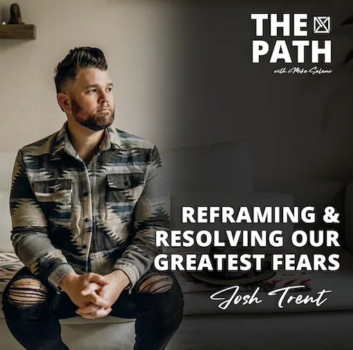

B879 · Reframing & Resolving our Greatest Fears
Hi {first_name},
Today on the show, we are joined by the host of the Wellness + Wisdom Podcast, Josh Trent. I’ve had the honor of being a guest on his show, so now the tables have turned and we get to know Josh on a much deeper level. You'll find that Josh is an incredibly heartfelt, intelligent, and articulate man who has had a lot of life experience. Our conversation goes into topics like conscious fatherhood, reevaluating our ideas around failure, vision quests, and healing generational wounds. This is a great conversation with a very heart-centered and intentional human being.
In Episode #23 of The Path, Josh and I discuss:
 Click here to listen on Apple.
Click here to listen on Spotify. Yours in Health, Mike |